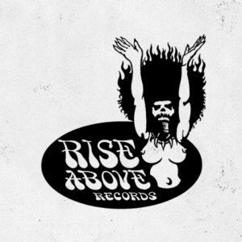

홈 > 브랜드 매거진 > Southern Fried Records
Southern Fried Records
서던 프라이드 레코드(Southern Fried Records)는 1994년 노먼 쿡(팻보이 슬림)이 영국에서 설립한 댄스 음악 레이블이다. 하우스·빅비트를 다루는 독립 레이블이다.
산업 분야 미디어·엔터테인먼트 · 공개 등급 디렉토리 · 브랜드 평가 3.2 ★
한눈에 보는 브랜드
서던 프라이드 레코드(Southern Fried Records)는 1994년 노먼 쿡(팻보이 슬림)이 영국에서 설립한 댄스 음악 레이블이다. 하우스·빅비트를 다루는 독립 레이블이다.
브랜드 관점
서던 프라이드 레코드는 팻보이 슬림이 세운 영국의 댄스·빅비트 레이블이다. 설립·운영 주체, 주력 장르, 대표 아티스트를 함께 보면 미디어·엔터테인먼트 안에서의 위치가 또렷해진다.
시작과 성장
1994년 노먼 쿡(팻보이 슬림)이 런던을 기반으로 설립했다. 하우스·빅비트·일렉트로를 다루며 아르망 반 헬덴 등을 발매했다.
브랜드 아이덴티티
Southern Fried Records의 아이덴티티는 브랜드명, 로고 사용 여부, 업종 언어, 국가적 배경을 중심으로 정리됩니다. 공개 로고 자산은 추후 권리 확인 후 보강할 수 있도록 텍스트 메타데이터 중심으로 관리합니다.
확장 지식
런던 기반의 댄스·빅비트 독립 레이블이다.
제품과 서비스
하우스·빅비트·일렉트로 음반을 발매한다. 아르망 반 헬덴 'My My My' 등이 대표적이다.
사람들
노먼 쿡(팻보이 슬림)이 1994년 설립했다.
현재 상태
타임라인
정리된 연도형 이벤트가 없습니다.
BI/CI 변천사
확인된 BI/CI 이미지가 아직 없습니다.
함께 읽을 브랜드
 미디어·엔터테인먼트 · 디렉토리DJM Records
미디어·엔터테인먼트 · 디렉토리DJM RecordsDJM 레코드(DJM Records)는 1969년 영국에서 음악 출판사 딕 제임스 뮤직 산하로 만들어진 음반 레이블이다. 엘튼 존의 초기 영국 음반을 발매한 것으로...
 미디어·엔터테인먼트 · 디렉토리Megaforce Records
미디어·엔터테인먼트 · 디렉토리Megaforce Records메가포스 레코드(Megaforce Records)는 1982년 존·마샤 자줄라 부부가 미국에서 설립한 헤비메탈 레이블이다. 메탈리카의 데뷔작 'Kill 'Em All...

미디어·엔터테인먼트 · 디렉토리Rise Above Records라이즈 어보브 레코드(Rise Above Records)는 1988년 리 도리안이 영국에서 설립한 둠·스토너 메탈 레이블이다. 커시드럴·일렉트릭 위저드 등을 배출한...
 미디어·엔터테인먼트 · 디렉토리워프 레코즈
미디어·엔터테인먼트 · 디렉토리워프 레코즈워프 레코드(Warp Records)는 1989년 스티브 베킷 등이 영국 셰필드에서 설립한 일렉트로닉·실험음악 레이블이다. 에이펙스 트윈·오테커 등을 배출한 IDM의...
엔야 레코드(Enja Records)는 1971년 마티아스 빙켈만과 호르스트 베버가 독일 뮌헨에서 설립한 재즈 레이블이다. 'European New Jazz'에서 이...
미디어·엔터테인먼트 · 디렉토리Flip Records플립 레코드(Flip Records)는 1994년 조던 슈어가 미국 캘리포니아에서 설립한 록 레이블이다. 림프 비즈킷·스테인드 등 누메탈 밴드를 발매한 것으로 알려졌...
 미디어·엔터테인먼트 · 디렉토리Intakt Records
미디어·엔터테인먼트 · 디렉토리Intakt Records인탁트 레코드(Intakt Records)는 1986년 파트릭 란돌트가 스위스 취리히에서 설립한 재즈 레이블이다. 프리·아방가르드 재즈를 다루는 독립 레이블로, 이렌...
 미디어·엔터테인먼트 · 디렉토리Lookout! Records
미디어·엔터테인먼트 · 디렉토리Lookout! Records룩아웃! 레코드(Lookout! Records)는 1987년 래리 리버모어와 데이비드 헤이즈가 미국 캘리포니아에서 설립한 펑크 레이블이다. 그린데이 초기작을 발매한...